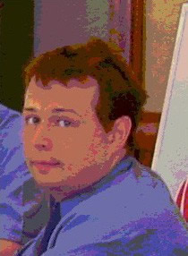

Nikolai Novitski graduate student Cognitive Brain Research Unit, Dept. of Psychology; Univ. of Helsinki, Finland, phone +358 9 19129502; fax +358 9 19122924 E-mail: nikolai.novitski at helsinki.fi
graduate student
Cognitive Brain Research Unit, Dept. of Psychology; Univ. of Helsinki, Finland,
phone +358 9 19129502; fax +358 9 19122924
E-mail: nikolai.novitski at helsinki.fi
Supervisors
Collaborators
Publications
Grants
Research interests
auditory ERPs; MMN; acoustic noise; pitch perception; fMRI; auditory cortex; MEG
General scientific interests
animal behavior; behavioral genetics; bilingualism; brain evolution; working memory; consciousness; language evolution; modularity of mind; nervous system development; neuronal basis of EEG and fMRI; non-invasive brain imaging techniques; tone languages
animal behavior; behavioral genetics; bilingualism; brain evolution; working memory;
consciousness; language evolution; modularity of mind; nervous system development;
neuronal basis of EEG and fMRI; non-invasive brain imaging techniques;
tone languages
Research projects
fMRI acoustic noise effects on ERP Automatic pitch discrimination in humans: adults and newborn
fMRI acoustic noise effects on ERP
Automatic pitch discrimination in humans: adults and newborn